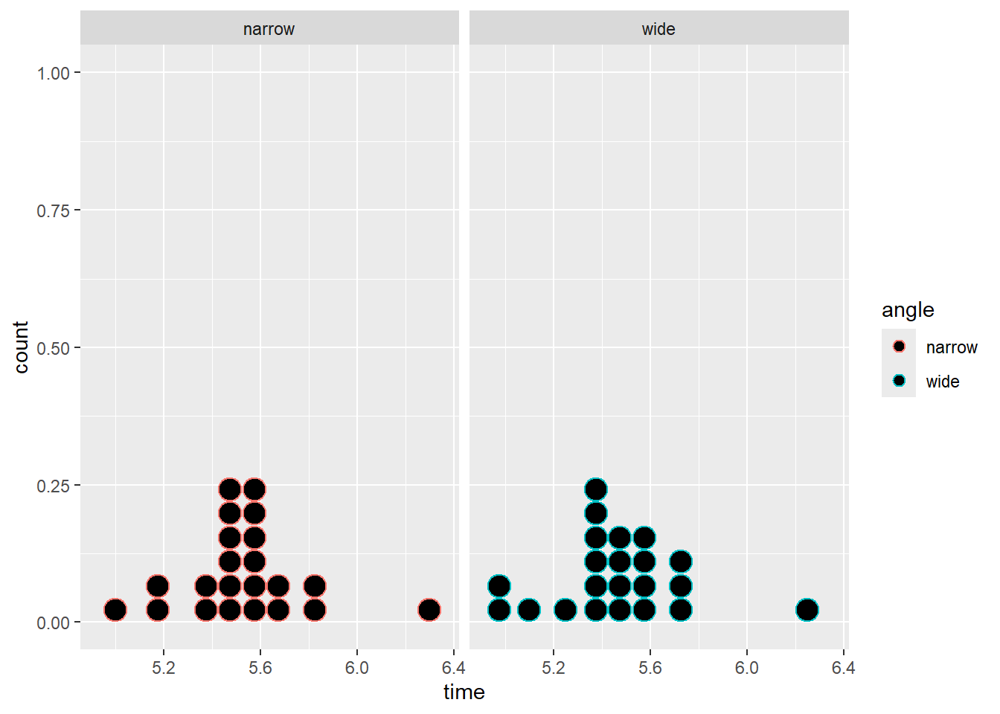
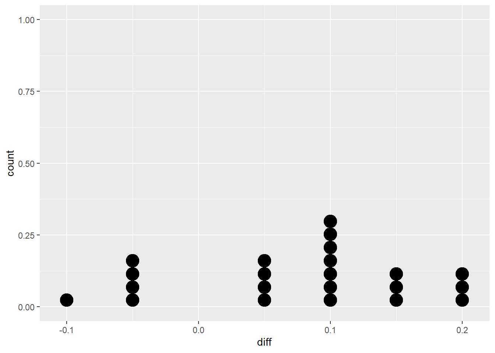
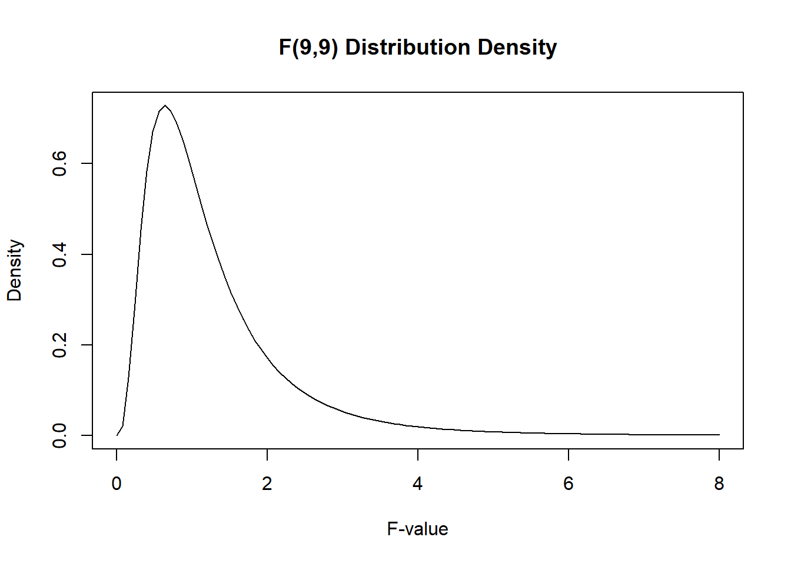

As mentioned at the end of Chapter 3, we’ll now move on to cases in which we have a single explanatory variable and a single response variable. In this section, we’ll cover the case where the explanatory variable is categorical with only two levels, and the response variable is either categorical or numeric. This means that in this chapter, we’ll be focusing on comparing two groups.
Data like these may show up in a spreadsheet like
4.1 Categorical Response, Two Levels
First, we’ll consider situations in which two categorical variables are measured on each unit in the sample, and each variable has two possible values. In cases like these, typically one variable is considered the response and one variable is considered explanatory. The explanatory variable may be randomly assigned (like whether a subject was assigned to a treatment or control) or it may be merely observed (like smoking status).
The two possible values of the explanatory variable lead to two groups, and we’re interested in comparing the population proportions that arise from these two groups. We’ll focus on the function of parameters \(p_1 - p_2\). The natural estimate of this is \(\hat{p_1} - \hat{p_2}\): the difference in the sample proportions. We’ll be constructing hypothesis tests to compare \(p_1\) to \(p_2\) and finding confidence intervals to estimate \(p_1 - p_2\). To demonstrate these methods, we’ll use an example.
Example: Biologists studying crows will capture a crow, tag it, and release it. These crows seem to remember the scientists who caught them and will scold them later. A study to examine this effect had several scientists wear a caveman mask while they trapped and tagged 7 crows. A control group did not tag any crows and wore a different mask. The two masks did not elicit different reactions from the crows before tagging. Volunteers then strolled around town wearing one or the other of the two masks.The crows scolded a person wearing a caveman mask in 158 out of 444 encounters with crows, whereas crows scolded a person in a neutral mask in 109 out of 922 encounters. Suppose we want to find a confidence interval for the difference in proportion of crow scoldings between volunteers wearing the caveman mask and those wearing the neutral mask.
For a single proportion, we needed two conditions to be met to ensure the sampling distribution of \(\hat{p}\) is approximately normal:
If these conditions are met, then
We must meet similar conditions to ensure the sampling distribution of \(\hat p_1 - \hat p_2\) is approximately normal:
If these conditions are met, then
Like before we don’t know \(p_1\) and \(p_2\), so we’ll use our best guess. And, like before, our best guess will change depending on whether we’re constructing a confidence interval or carrying out a hypothesis test.
How is this going to play out in a confidence interval?
Let’s go back to the crows.
How is this going to play out in a hypothesis test?
Again, let’s go back to the crows.
We can also do this is R or SAS, but either program will use a different (but also not really) approach. We’ll start with R.
prop.test(x=c(158,109), n=c(444,922))
2-sample test for equality of proportions with continuity correction
data: c(158, 109) out of c(444, 922)
X-squared = 106.11, df = 1, p-value < 2.2e-16
alternative hypothesis: two.sided
95 percent confidence interval:
0.1867976 0.2884716
sample estimates:
prop 1 prop 2
0.3558559 0.1182213
Why do both R and SAS carry out the procedure like this? This is a method that can be used in situations where both the explanatory and response variable have any number (\(\geq 2\)) possible values. We’ll see examples like this in the next chapter.
But! The methods are actually doing the same thing. Let’s look at the test we carried out by hand.
Example: Do metal tags on penguins harm them? Scientists trying to tell penguins apart have several ways to tag the birds. One method involves wrapping metal strips with ID numbers around the penguin’s flipper, while another involves electronic tags. Neither tag seems to physically harm the penguins. However, since tagged penguins are used to study all penguins, scientists wanted to determine whether the tagging method has any effect. Data were collected over a 10-year time span from a sample of 100 penguins that were randomly given either metal or electronic tags. Information collected includes number of chicks, survival over the decade, and length of time on foraging trips. Let’s first consider survival. We’re interested in estimating the difference in survival rate between penguins with metal tags and penguins with electronic tags.
What parameters are of interest here?
What kind of research question are we trying to answer? What does this imply about the analysis method?
What next?
Let’s do the analysis in R.
4.2 Quantitative Response
Example: Data were collected over a 10-year time span from a sample of 100 penguins that were randomly given either metal or electronic tags. Information collected includes number of chicks, survival over the decade, and length of time on foraging trips. Now let’s focus on length of foraging trips. Longer foraging trips can jeopardize both breeding success and survival of chicks waiting for food. Suppose we’re interested in estimating the difference in mean trip length between penguins with metal tags and those with electronic tags.
What are the parameters?
What kind of research question are we trying to answer? What does this imply about the analysis method?
What’s different from the crows example?
This means we will have to change our analysis approach.
Just like with the \(t\) methods for single means, we need to check conditions to determine whether we can the \(t\)-distribution to construct tests and form confidence intervals for the difference in means.
Independence–both between and within groups
Check normality of each group separately (basically checking for extreme outliers)
If these are both met, then the standard error of \(\bar x_1 - \bar x_2\) is \(SE = \sqrt{\frac{\sigma_1^2}{n_1} + \frac{\sigma^2_2}{n_2}}\) with \(df=\) really complicated (you’ll see we get non-integers in R/SAS–it’s doing the complicated calculation). We’ll use \(\min(n_1-1, n_2-1)\) if we’re not using R/SAS. We won’t know \(\sigma^2_1\) and \(\sigma_2^2\), so we’ll approximate the standard error using \(SE \approx \sqrt{\frac{s_1^2}{n_1} + \frac{s^2_2}{n_2}}\)
As with tests for a single mean (and one proportion, and two proportions), our test statistic will have the usual form: \[
\hbox{test statistic} = \frac{\hbox{observed value - hypothesized value}}{SE}
\] In the case of two means, this is \[
T = \frac{(\bar x_1 - \bar x_2) - 0}{\sqrt{\frac{s_1^2}{n_1} + \frac{s_2^2}{n_2}}}
\] When the null hypothesis is true and the conditions are met, \(T\) has a \(t\)-distribution with \(df=\min(n_1-1,n_2-1)\).
Confidence intervals will also have the same form: \[
\hbox{observed statistic} \pm \hbox{multiplier} \times SE
\] For this specific situation of comparing two independent means, this is \[
(\bar x_1 - \bar x_2) \pm t^*_{df} \times \sqrt{\frac{s_1^2}{n_1} + \frac{s^2_2}{n_2}}
\] and we’ll again use \(df=\min(n_1-1,n_2-1)\) (or let R/SAS calculate it for us).
With two proportions, our SE changed depending on whether we were doing a hypothesis test or calculating a confidence interval. Here, it doesn’t. Any guesses why?
Example: There were 344 foraging trips made by penguins with a metal tag, and those trips had a sample mean of \(\bar x_{M} =12.70\) days with standard deviation \(s_{M}=3.71\) days. For those penguins with electronic tags, the mean was \(\bar x_{E} = 11.60\) days with standard deviation \(s_{E}=4.53\) days over 512 trips.
Example: Another variable measured was the date penguins arrive at the breeding site, with later arrivals hurting breeding success. Arrival date is measured as the number of days after 1 November. The researchers are interested in whether metal tagged penguins arrive later than electronic tagged penguins.
What are the parameters?
What kind of research question are we trying to answer? What does this imply about the analysis method?
Mean arrival date for the 167 times metal tagged penguins arrived was 7 December (37 days after 1 November) with standard deviation \(s_{M}=38.77\) days, while mean arrival date for the 189 times electronic tagged penguins arrived was 21 November (21 days after 1 November) with standard deviation \(s_{E}=27.50\)
We can easily carry out \(t\) tests and confidence intervals in R and SAS. But, we can’t for the penguin data. R and SAS both require the whole data set, as opposed to summary statistics.
Example: The data set may be found in Canvas: ‘NutritionStudy.csv’. This data set gives nutrition levels in people’s blood as well as information about their eating habits, and comes from a random sample of 315 US adults. Suppose we are interested in estimating the difference in mean beta carotene blood level between smokers and non-smokers. Let’s start by reading the data into R.
So now we have all the components we need to calculate the confidence interval.
We can also let R calculate the confidence interval for us, using t.test:
t.test(BetaPlasma~Smoke,data=NutritionStudy)
Welch Two Sample t-test
data: BetaPlasma by Smoke
t = 4.7421, df = 139.15, p-value = 5.175e-06
alternative hypothesis: true difference in means between group No and group Yes is not equal to 0
95 percent confidence interval:
46.29873 112.51335
sample estimates:
mean in group No mean in group Yes
200.7316 121.3256
Welch Two Sample t-test
data: BetaPlasma by Smoke
t = 4.7421, df = 139.15, p-value = 5.175e-06
alternative hypothesis: true difference in means between group No and group Yes is not equal to 0
90 percent confidence interval:
51.67854 107.13353
sample estimates:
mean in group No mean in group Yes
200.7316 121.3256
Let’s carry out a test by hand, to see how it compares to the output.
4.3 Comparing Paired Means
Everything we’ve done so far has assumed independence among observations. If we only had one group, it was just independence among observations. If we had two or more groups, it was independence between and within groups. Now, we’ll turn our attention to a common situation: dependence between groups. Specifically, a particular dependency–pairing. This occurs in before/after studies, other studies in which subjects are matched. For example, considering the price of a item purchased from two different retailers.
In these situations, we generally take the difference between the two values, and consider the difference as our observation. So, for example, if we want to compare cost of textbooks between the campus bookstore and Amazon, we’d randomly select a set of book titles, and find their price at both the bookstore and Amazon. We’d find the difference in price, and use those differences as our observations.
Note that we’re distinguishing between and .
Good news: we’ve already seen how to construct tests and confidence intervals here! We just use the same techniques we used for a single mean (Chapter 3), but on the differences. The changes come in the form of the hypotheses and interpretation of the confidence interval.
Example: Long distance runners contend that moderate exposure to ozone increases lung capacity. In investigate this possibility, a researcher exposed 12 rats to ozone at the rate of 2 ppm for a period of 30 days. The lung capacity of the rats was determined at the beginning of the study and again after 30 days of ozone exposure. The lung capacities (in mL) are in the file ‘ozone.csv’.
What does this imply about the analysis method we should use?
t.test(ozone$diff)
One Sample t-test
data: ozone$diff
t = -3.885, df = 11, p-value = 0.002541
alternative hypothesis: true mean is not equal to 0
95 percent confidence interval:
-1.8928932 -0.5237735
sample estimates:
mean of x
-1.208333
t.test(ozone$Before,ozone$After,paired=TRUE)
Paired t-test
data: ozone$Before and ozone$After
t = -3.885, df = 11, p-value = 0.002541
alternative hypothesis: true mean difference is not equal to 0
95 percent confidence interval:
-1.8928932 -0.5237735
sample estimates:
mean difference
-1.208333
What is incorrect about this analysis in R? How can we fix it?
Paired t-test
data: ozone$Before and ozone$After
t = -3.885, df = 11, p-value = 0.001271
alternative hypothesis: true mean difference is less than 0
95 percent confidence interval:
-Inf -0.6497695
sample estimates:
mean difference
-1.208333
Let’s write a couple of conclusions here.
What are the consequences of ignoring pairing? Let’s look at a different example.
Example: Suppose you are playing baseball and hit a hard line drive. You want to turn a single into a double. Does the path you take to round first base make a difference? A masters thesis way back in 1970 considered the difference between a “narrow angle” and a “wide angle” around first base. Suppose we have 22 baseball players who have volunteered to participate. There are a couple ways we could design an experiment to see if there is a difference.
Randomly assign 11 players to run a wide angle and 11 players to run a narrow angle. Problems: some players may be faster than others. Ideally, randomization will equally distribute the speedy runners between the two groups, but there is no guarantee. Speed could be a confounding variable.
Have each of the 22 runners run both angles, with the angle run first randomized using a coin. This allows each player to serve as their own control.
The second option is what the thesis writer did–he randomly determined the angle the player would take first. He then used a stopwatch the time the run from going from a spot 35 feet past home to a spot 15 feet before 2nd base. After a rest period, the runner then ran the second angle. This controls for runner-to-runner variability. It’s important to randomize the order of the treatments, where possible! (This isn’t possible in before-and-after type studies.)


[1] 0.075
Parameter of interest:
Hypotheses of interest:
Observed statistic:
Like before, we’re trying to determine if it’s surprising to see such a large difference as \(\bar x_d = 0.075\) just by chance, if running strategy has no effect on running time.
t.test(bases$diff)
One Sample t-test
data: bases$diff
t = 3.9837, df = 21, p-value = 0.0006754
alternative hypothesis: true mean is not equal to 0
95 percent confidence interval:
0.03584814 0.11415186
sample estimates:
mean of x
0.075
t.test(time~angle,data=bases2)
Welch Two Sample t-test
data: time by angle
t = 0.93383, df = 41.899, p-value = 0.3557
alternative hypothesis: true difference in means between group narrow and group wide is not equal to 0
95 percent confidence interval:
-0.08709334 0.23709334
sample estimates:
mean in group narrow mean in group wide
5.534091 5.459091
4.4 Comparing Variances
Often it is useful to test if variances from independent populations are different. For example,
a geneticist wants to test equality of the genotypic variances of kernel weight of two different corn populations
an engineer is interested in comparing the process variance of two different types of production systems used to make a electronic component
the two-sample \(t\)-test is based on the assumption that the variances of the two populations are equal
Assume the data from both populations follow a normal distribution with different means and possibly different variances. We want to test
A natural approach would be to take samples of \(n_1\) and \(n_2\) observations from the two populations, and compute \(s_1^2\) and \(s_2^2\). We could then take the ratio \(s_1^2/s_2^2\) and reject H\(_0\) if the ratio is very different from 1. But, we need to know the sampling distribution of the ratio \(S^2_1/S^2_2\). Recall
Sir R. A. Fisher showed that the ratio of two independent \(\chi^2\) distributions has an \(F\) distribution with \((n_1-1)\) and \((n_2-1)\) degrees of freedom. Specifically,
Under H\(_0: \sigma^2_1 = \sigma^2_2\) then
The \(F\) distribution
is non-negative, unimodal, and right skewed

the shape of the distribution depends on the numerator and denominator degrees of freedom
So, to test H\(_0: \sigma_1^2 = \sigma_2^2\) versus H\(_a: \sigma_1^2 \neq \sigma_2^2\), we can
Assume that \(S_1^2\) is the larger of the two sample variaces
Use \(S_1^2/S_2^2\) as a test statistic. Under H\(_0\), this ratio will follow an \(F\) distribution with \(n_1-1\) and \(n_2-1\) degrees of freedom
Use the \(F\) distribution to see if \(s_1^2/s_2^2\) is enough bigger than 1 to convince us the null hypothesis is not true (always a right-tail test!)
Example: The writings of different authors can be partially characterized by the variablity in the lengths of their sentences. Two manuscripts, \(A\) and \(B\), are found by a historian and they want to know whether they have the same author. Fifteen sentences from each are chosen at random, and word counts per sentence are recorded. The historian finds \(s_A^2= 0.114\) and \(s_B^2= 0.143\).
We can use var.test() in R, but must have the whole data set.
Example: Earlier, we used a data set with nutrition levels in people’s blood as well as information about their eating habits that came from a random sample of 315 US adults.
The Quetelet index is a measure of body mass (BMI). Suppose we are interested in whether smokers and nonsmokers have the same variability of BMI scores.
var.test(Quetelet~Smoke,data=NutritionStudy)
F test to compare two variances
data: Quetelet by Smoke
F = 1.563, num df = 271, denom df = 42, p-value = 0.08157
alternative hypothesis: true ratio of variances is not equal to 1
95 percent confidence interval:
0.9438906 2.3908039
sample estimates:
ratio of variances
1.563047
Now that we’ve covered one predictor variable with two levels, we can move on to one predictor variable with more than 2 levels.